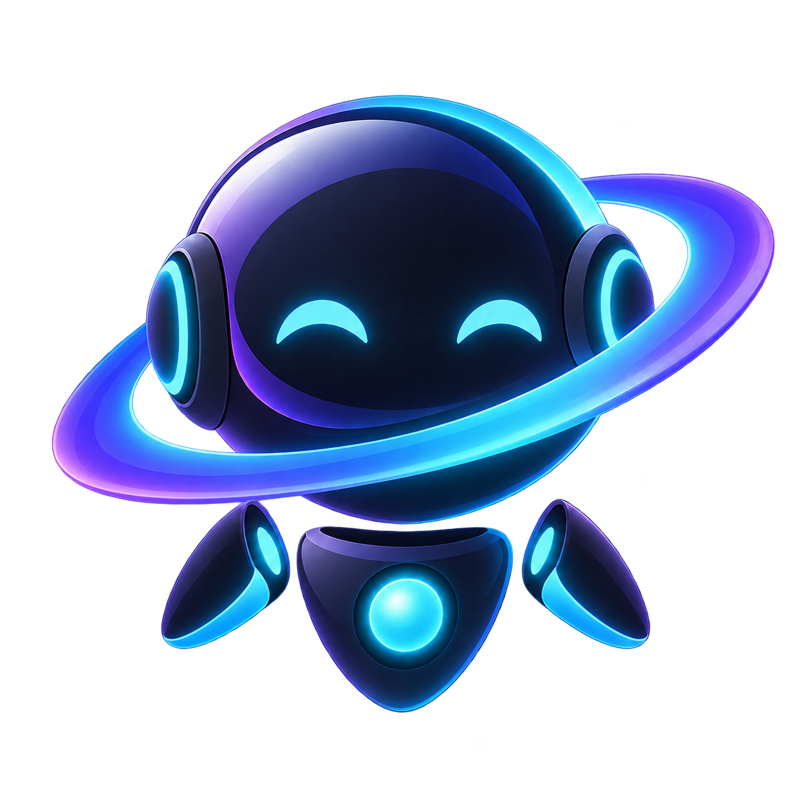
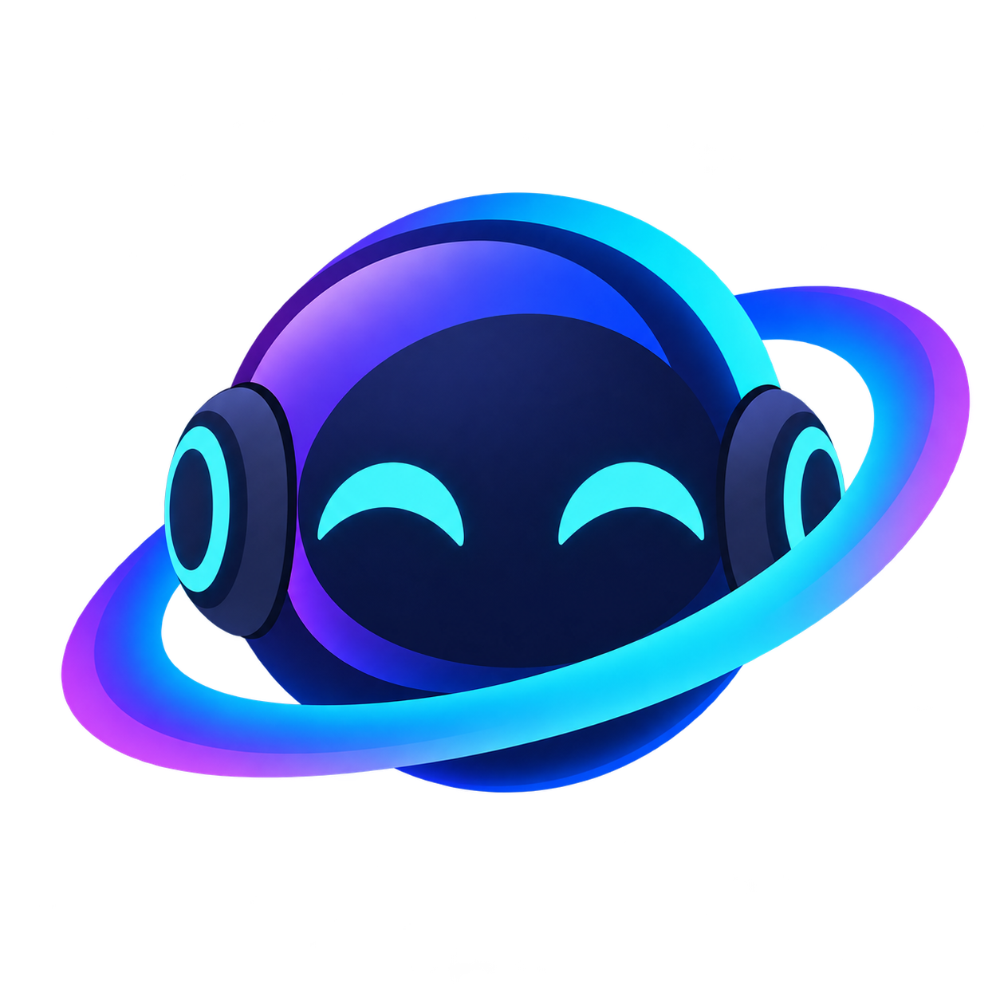
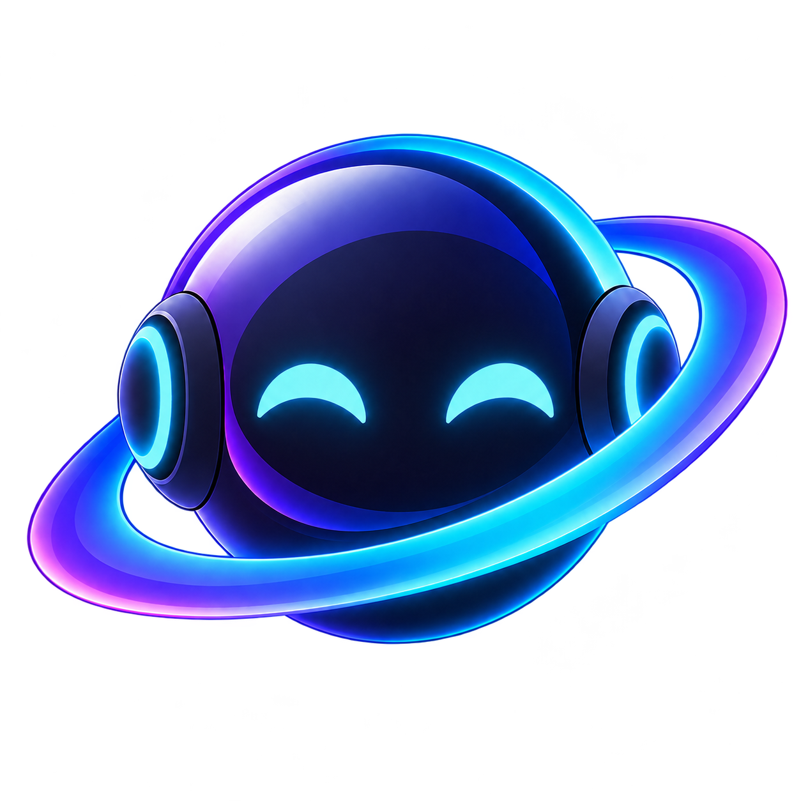

Houston mascot motion
Exploratory prototype. Every animation uses the canonical artwork in
ui/resources/branding/: whole-image motion transforms the PNG as-is; the articulated rig stacks
layers cut from houston-mascot.png by tools/build_layers.py; the pixel sprite is
drawn procedurally from the mascot's measured geometry and palette. All motion is CSS
transform/opacity or a 10 fps canvas, outside any terminal surface.
Recommendation
- Working — orbit sweep + core pulse. The ring is the identity; light travelling around it says
"busy" without moving the silhouette, and it still reads at 32 px. Best fit for
Working. - Idle — magnetic float + blink. Detached parts drifting with phase lag is the one movement only this
character can do. Low amplitude, long period; it is the base every other state sits on (
Idle,Spawning). - Needs input — headset call. Hand to the headphone cup: the mission-control gesture the name
"Houston" implies. It changes the silhouette, so it is noticeable in a peripheral glance, and the pose survives reduced motion. Amber matches the app's
--warntoken (NeedsInput). - Sleep. Droop, closed eyes, dimmed core. Clear for
Unavailableor a long idle; calm enough to leave on screen. - Greeting wave and celebration: charming one-shots for first launch and "task done"; play once, never loop.
Rejected: whole-image spin (rotates the face with the ring and breaks identity), continuous whole-image wobble as an idle (reads as an error shake). Pixel art: see its section verdict below.
Articulated character motion layered PNG
Head + ring, eyes, both arms, torso and core are separate layers of the original artwork. Eyes and core were cut out and the gaps inpainted so blinking and dimming reveal the face and socket, not a hole.
In context 40 px status chips
How the recommended set reads at sidebar size. Status must come from reported lifecycle hooks
(AgentStatus), never from terminal output.
Pixel art procedural sprite, 48×44
Drawn cell by cell from the mascot's geometry (sphere, visor, crescents, tilted orbit, cups, arms, shield torso, core) with a palette sampled from the PNG. Because the orbit is geometry, the light can pass behind the head, which the raster rig cannot do. Rendered at integer scale only.
Verdict: recognisable and charming at 1×–3× (48–144 px), and the strongest option for a desktop/IDE companion that sits in a corner, because stepped 10 fps motion is cheap and reads as intentional. It loses the glossy gradients that define the brand art, so it should be a separate "companion" skin, not a replacement. Before production it needs a hand-cleaning pass by a pixel artist (eye shapes, arm silhouettes, anti-alias clusters); this procedural version proves the direction, not the final sprite.
Whole-image motion single PNG
Cheapest option: no layers, works for the app icon, tray or splash. Limited to moving the entire picture.



Integration notes
- Bind states only to
AgentStatusfrom reported lifecycle hooks (Spawning/Idle→ idle,Working→ working,NeedsInput→ headset call,Unavailable→ sleep). Greeting and celebration are one-shot events, never inferred from terminal output. - Keep the mascot out of terminal panes and off the terminal rendering path. Animate only
transformandopacity; pause when the window is hidden or the element is off screen; honourprefers-reduced-motionby holding each state's static pose. - Many simultaneous instances (e.g. one per pane in a grid) should fall back to a static pose or the 10 fps pixel sprite; measure before enabling the articulated rig in lists.
Exports
GIF and WebM loops of every articulated and pixel animation, captured at 200 px: exports/ — e.g. rig-working.webm, pixel-idle.gif. Key frames: keyframes.png.